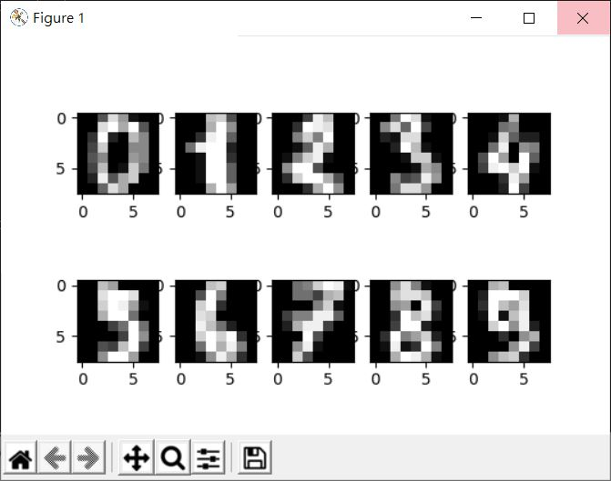
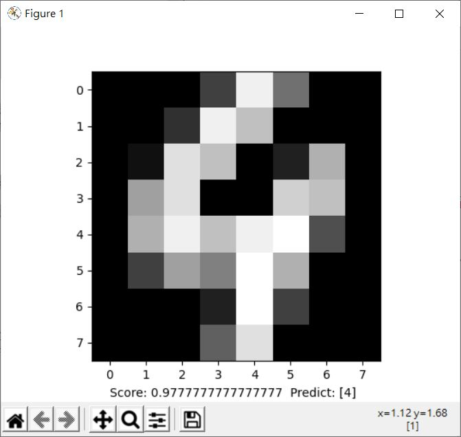

在〈多層感知器（四）〉自行下載了 MINST 手寫圖片資料集，實際上，sklearn.datasets 提供了一些資料集，可以透過 load_*、fetch_*、make_* 函式取得。
load 開頭表示載入一些簡單的玩具資料集，fetch 表示載入真實世界的資料集，make 開頭建立一個虛擬的資料集。
你可以在〈Dataset loading utilities〉取得資料集的相關說明，底下以手寫資料集為例，這可以透過 load_digits 函式取得，若使用預設參數的話，會傳回 Bunch 實例，其中 data 包含 0 到 9 的數字圖片資料，target 是標記，DESC 是簡單的描述等：
>>> from sklearn.datasets import load_digits
>>> digits = load_digits()
>>> digits.data
array([[ 0., 0., 5., ..., 0., 0., 0.],
[ 0., 0., 0., ..., 10., 0., 0.],
[ 0., 0., 0., ..., 16., 9., 0.],
...,
[ 0., 0., 1., ..., 6., 0., 0.],
[ 0., 0., 2., ..., 12., 0., 0.],
[ 0., 0., 10., ..., 12., 1., 0.]])
>>> digits.target
array([0, 1, 2, ..., 8, 9, 8])
>>> digits.DESCR
".. _digits_dataset:\n\nOptical recognition of handwritten digits dataset\n--------------------------------------------------\n\n**Data Set Characteristics:**\n\n :Number of Instances: 1797\n :Number of Attributes: 64\n :Attribute Information: 8x8 image of integer pixels in the range 0..16....略
>>>
從上面可以看到，data 的每一筆代表一張 8x8 圖片，共有 1797 筆，target 是 0 到 9 的標記，長度是 1797，各對應至 data 的每一張圖片，例如，顯示一下前十筆：
from sklearn.datasets import load_digits
import matplotlib.pyplot as plt
digits = load_digits()
plt.gray()
for i in range(10):
plt.subplot(2, 5, i + 1)
plt.imshow(digits.data[i].reshape((8, 8)))
plt.show()

來仿造〈多層感知器（四）〉中的範例：
import numpy as np
import matplotlib.pyplot as plt
from matplotlib import cm
from sklearn.model_selection import train_test_split
from sklearn.neural_network import MLPClassifier
from sklearn.datasets import load_digits
digits = load_digits()
imgs_training_data, img_test_data, lb_training_data, lb_test_data = train_test_split(
digits.data, digits.target, stratify = digits.target, random_state = 1
)
mlp = MLPClassifier() # 用預設值就可以了，可自行查詢文件瞭解預設值
mlp.fit(imgs_training_data, lb_training_data)
# 評估
plt.text(0, 8.5,
"Score: " + str(mlp.score(img_test_data, lb_test_data)))
# 用測試圖片看看
plt.imshow(img_test_data[0].reshape((8, 8)), cmap = cm.gray)
# 預測值
plt.text(5, 8.5,
"Predict: " + str(mlp.predict([img_test_data[0]])))
plt.show()
這會顯示以下的結果：

另一個常見用來作為機器學習入門的資料集是鳶尾花卉數據集（Iris data set），資料集中包含了 150 筆資料，記錄了鳶尾屬下山鳶尾（setosa）、變色鳶尾（versicolor）和維吉尼亞鳶尾（virginica）的資料，每筆資料包含了花萼長度、花萼寬度、花瓣長度、花瓣寬度與屬種。
sklearn.datasets 的 load_iris 可以載入鳶尾花卉數據集，例如：
from sklearn.datasets import load_iris
iris = load_iris()
print('花萼長度/花萼寬度/花瓣長度/花瓣寬度：\n', iris.data)
print('屬種名稱：\n', iris.target_names)
print('屬種標記：\n', iris.target)
會顯示以下的結果：
花萼長度/花萼寬度/花瓣長度/花瓣寬度：
[[5.1 3.5 1.4 0.2]
[4.9 3. 1.4 0.2]
[4.7 3.2 1.3 0.2]
[4.6 3.1 1.5 0.2]
[5. 3.6 1.4 0.2]
...略
[6.2 3.4 5.4 2.3]
[5.9 3. 5.1 1.8]]
屬種名稱：
['setosa' 'versicolor' 'virginica']
屬種標記：
[0 0 0 0 0 0 0 0 0 0 0 0 0 0 0 0 0 0 0 0 0 0 0 0 0 0 0 0 0 0 0 0 0 0 0 0 0
0 0 0 0 0 0 0 0 0 0 0 0 0 1 1 1 1 1 1 1 1 1 1 1 1 1 1 1 1 1 1 1 1 1 1 1 1
1 1 1 1 1 1 1 1 1 1 1 1 1 1 1 1 1 1 1 1 1 1 1 1 1 1 2 2 2 2 2 2 2 2 2 2 2
2 2 2 2 2 2 2 2 2 2 2 2 2 2 2 2 2 2 2 2 2 2 2 2 2 2 2 2 2 2 2 2 2 2 2 2 2
2 2]